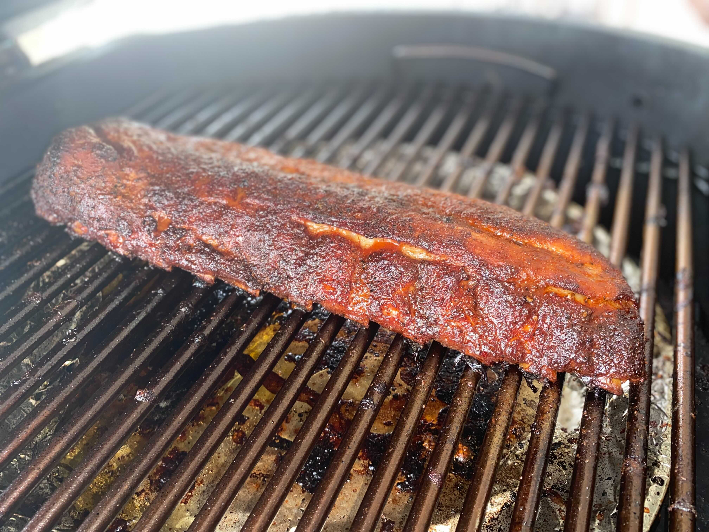

3-2-1 Ribs

Description
Delicious BBQ ribs made easy! An excellent main dish for a summer party.
This particular recipe comes courtesy of Danielle "Diva Q" Bennett from Traeger.
Ingredients
- 2 racks baby back or spare pork ribs
- 1/3 cup yellow mustard
- 1/2 cup apple juice, divided
- 1 Tablespoon Worcestershire sauce
- To taste Pork & Poultry Rub
- 1/2 cup dark brown sugar
- honey, warmed
- 1 cup Traeger 'Que BBQ Sauce
Steps
- Remove the thin silverskin membrane from the bone-side of the ribs, if it
hasn't already been removed. Use a paper towel to get a firm grip on the
membrane.
- In a small bowl, combine the mustard, 1/4 cup of apple juice (reserve the rest)
and the Worcestershire sauce. Spread thinly on both sides of ribs and season with
Traeger Pork & Poultry Rub.
- Preheat smoker/pellet grill to 180°F.
- Place ribs meat side up in smoker. Smoke the ribs for 3 hours, or until
the internal temperature reaches 160°F.
- Transfer ribs to a rimmed baking sheet and increase the grill temperature
to 225°F.
- Place ribs on heavy-duty aluminum foil. Sprinkle half the brown sugar on the
ribs, then top with half the honey and half of the remaining apple juice. For
more tender ribs, more apple juice can be applied. Wrap tightly in foil so there's
no leakage.
- Return the wrapped ribs to the grill and cook for an additional 2 hours, or until
internal temperature reaches 205°F.
- Carefully remove the foil from the ribs and brush the Traeger 'Que Sauce on
both sides of the ribs. Discard the aluminum foil. Return ribs to grill until
the sauce tightens, 30 to 60 minutes more.
- Remove ribs from grill and let them rest before serving. Enjoy!
Home